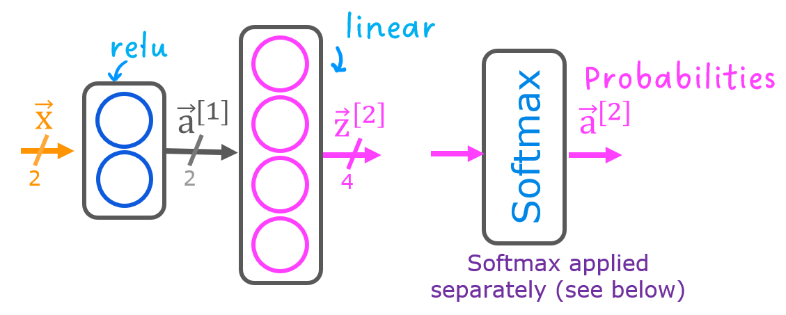

Optional Lab - Multi-class Classification
1.1 Goals
In this lab, you will explore an example of multi-class classification using neural networks.

1.2 Tools
You will use some plotting routines. These are stored in lab_utils_multiclass_TF.py in this directory.
[1]:
import numpy as np
import matplotlib.pyplot as plt
%matplotlib widget
from sklearn.datasets import make_blobs
import tensorflow as tf
from tensorflow.keras.models import Sequential
from tensorflow.keras.layers import Dense
np.set_printoptions(precision=2)
from lab_utils_multiclass_TF import *
import logging
logging.getLogger("tensorflow").setLevel(logging.ERROR)
tf.autograph.set_verbosity(0)
2.0 Multi-class Classification
Neural Networks are often used to classify data. Examples are neural networks: - take in photos and classify subjects in the photos as {dog,cat,horse,other} - take in a sentence and classify the ‘parts of speech’ of its elements: {noun, verb, adjective etc..}
A network of this type will have multiple units in its final layer. Each output is associated with a category. When an input example is applied to the network, the output with the highest value is the category predicted. If the output is applied to a softmax function, the output of the softmax will provide probabilities of the input being in each category.
In this lab you will see an example of building a multiclass network in Tensorflow. We will then take a look at how the neural network makes its predictions.
Let’s start by creating a four-class data set.
2.1 Prepare and visualize our data
We will use Scikit-Learn make_blobs function to make a training data set with 4 categories as shown in the plot below.
[2]:
# make 4-class dataset for classification
classes = 4
m = 100
centers = [[-5, 2], [-2, -2], [1, 2], [5, -2]]
std = 1.0
X_train, y_train = make_blobs(n_samples=m, centers=centers, cluster_std=std,random_state=30)
[3]:
plt_mc(X_train,y_train,classes, centers, std=std)
Each dot represents a training example. The axis (x0,x1) are the inputs and the color represents the class the example is associated with. Once trained, the model will be presented with a new example, (x0,x1), and will predict the class.
While generated, this data set is representative of many real-world classification problems. There are several input features (x0,…,xn) and several output categories. The model is trained to use the input features to predict the correct output category.
[4]:
# show classes in data set
print(f"unique classes {np.unique(y_train)}")
# show how classes are represented
print(f"class representation {y_train[:10]}")
# show shapes of our dataset
print(f"shape of X_train: {X_train.shape}, shape of y_train: {y_train.shape}")
unique classes [0 1 2 3]
class representation [3 3 3 0 3 3 3 3 2 0]
shape of X_train: (100, 2), shape of y_train: (100,)
2.2 Model
 This lab will use a 2-layer network as shown. Unlike the binary classification networks, this network has four outputs, one for each class. Given an input example, the output with the highest value is the predicted class of the input.
Below is an example of how to construct this network in Tensorflow. Notice the output layer uses a linear rather than a softmax activation. While it is possible to include the softmax in the output layer, it is more numerically stable if linear outputs are passed to the loss function during training. If the model is used to predict probabilities, the softmax can be applied at that point.
[5]:
tf.random.set_seed(1234) # applied to achieve consistent results
model = Sequential(
[
Dense(2, activation = 'relu', name = "L1"),
Dense(4, activation = 'linear', name = "L2")
]
)
The statements below compile and train the network. Setting from_logits=True as an argument to the loss function specifies that the output activation was linear rather than a softmax.
[6]:
model.compile(
loss=tf.keras.losses.SparseCategoricalCrossentropy(from_logits=True),
optimizer=tf.keras.optimizers.Adam(0.01),
)
model.fit(
X_train,y_train,
epochs=200
)
Epoch 1/200
4/4 [==============================] - 0s 1ms/step - loss: 1.8158
Epoch 2/200
4/4 [==============================] - 0s 1ms/step - loss: 1.6976
Epoch 3/200
4/4 [==============================] - 0s 1ms/step - loss: 1.5989
Epoch 4/200
4/4 [==============================] - 0s 961us/step - loss: 1.5179
Epoch 5/200
4/4 [==============================] - 0s 1ms/step - loss: 1.4369
Epoch 6/200
4/4 [==============================] - 0s 1ms/step - loss: 1.3756
Epoch 7/200
4/4 [==============================] - 0s 1ms/step - loss: 1.3154
Epoch 8/200
4/4 [==============================] - 0s 1ms/step - loss: 1.2621
Epoch 9/200
4/4 [==============================] - 0s 991us/step - loss: 1.2188
Epoch 10/200
4/4 [==============================] - 0s 983us/step - loss: 1.1791
Epoch 11/200
4/4 [==============================] - 0s 974us/step - loss: 1.1446
Epoch 12/200
4/4 [==============================] - 0s 984us/step - loss: 1.1129
Epoch 13/200
4/4 [==============================] - 0s 993us/step - loss: 1.0827
Epoch 14/200
4/4 [==============================] - 0s 1ms/step - loss: 1.0516
Epoch 15/200
4/4 [==============================] - 0s 1ms/step - loss: 1.0225
Epoch 16/200
4/4 [==============================] - 0s 974us/step - loss: 0.9967
Epoch 17/200
4/4 [==============================] - 0s 970us/step - loss: 0.9681
Epoch 18/200
4/4 [==============================] - 0s 980us/step - loss: 0.9392
Epoch 19/200
4/4 [==============================] - 0s 989us/step - loss: 0.9092
Epoch 20/200
4/4 [==============================] - 0s 966us/step - loss: 0.8771
Epoch 21/200
4/4 [==============================] - 0s 995us/step - loss: 0.8461
Epoch 22/200
4/4 [==============================] - 0s 1ms/step - loss: 0.8099
Epoch 23/200
4/4 [==============================] - 0s 988us/step - loss: 0.7771
Epoch 24/200
4/4 [==============================] - 0s 1ms/step - loss: 0.7485
Epoch 25/200
4/4 [==============================] - 0s 2ms/step - loss: 0.7215
Epoch 26/200
4/4 [==============================] - 0s 1ms/step - loss: 0.6967
Epoch 27/200
4/4 [==============================] - 0s 1ms/step - loss: 0.6742
Epoch 28/200
4/4 [==============================] - 0s 1ms/step - loss: 0.6540
Epoch 29/200
4/4 [==============================] - 0s 1ms/step - loss: 0.6352
Epoch 30/200
4/4 [==============================] - 0s 1ms/step - loss: 0.6187
Epoch 31/200
4/4 [==============================] - 0s 1ms/step - loss: 0.6030
Epoch 32/200
4/4 [==============================] - 0s 1ms/step - loss: 0.5884
Epoch 33/200
4/4 [==============================] - 0s 1ms/step - loss: 0.5746
Epoch 34/200
4/4 [==============================] - 0s 997us/step - loss: 0.5621
Epoch 35/200
4/4 [==============================] - 0s 980us/step - loss: 0.5512
Epoch 36/200
4/4 [==============================] - 0s 999us/step - loss: 0.5414
Epoch 37/200
4/4 [==============================] - 0s 988us/step - loss: 0.5323
Epoch 38/200
4/4 [==============================] - 0s 1ms/step - loss: 0.5236
Epoch 39/200
4/4 [==============================] - 0s 1ms/step - loss: 0.5150
Epoch 40/200
4/4 [==============================] - 0s 1ms/step - loss: 0.5072
Epoch 41/200
4/4 [==============================] - 0s 991us/step - loss: 0.5006
Epoch 42/200
4/4 [==============================] - 0s 982us/step - loss: 0.4944
Epoch 43/200
4/4 [==============================] - 0s 992us/step - loss: 0.4888
Epoch 44/200
4/4 [==============================] - 0s 1ms/step - loss: 0.4830
Epoch 45/200
4/4 [==============================] - 0s 1ms/step - loss: 0.4775
Epoch 46/200
4/4 [==============================] - 0s 1ms/step - loss: 0.4725
Epoch 47/200
4/4 [==============================] - 0s 998us/step - loss: 0.4673
Epoch 48/200
4/4 [==============================] - 0s 984us/step - loss: 0.4624
Epoch 49/200
4/4 [==============================] - 0s 987us/step - loss: 0.4574
Epoch 50/200
4/4 [==============================] - 0s 1ms/step - loss: 0.4530
Epoch 51/200
4/4 [==============================] - 0s 1ms/step - loss: 0.4491
Epoch 52/200
4/4 [==============================] - 0s 988us/step - loss: 0.4451
Epoch 53/200
4/4 [==============================] - 0s 970us/step - loss: 0.4414
Epoch 54/200
4/4 [==============================] - 0s 986us/step - loss: 0.4374
Epoch 55/200
4/4 [==============================] - 0s 995us/step - loss: 0.4336
Epoch 56/200
4/4 [==============================] - 0s 988us/step - loss: 0.4295
Epoch 57/200
4/4 [==============================] - 0s 965us/step - loss: 0.4261
Epoch 58/200
4/4 [==============================] - 0s 1ms/step - loss: 0.4225
Epoch 59/200
4/4 [==============================] - 0s 997us/step - loss: 0.4193
Epoch 60/200
4/4 [==============================] - 0s 986us/step - loss: 0.4161
Epoch 61/200
4/4 [==============================] - 0s 1ms/step - loss: 0.4131
Epoch 62/200
4/4 [==============================] - 0s 982us/step - loss: 0.4098
Epoch 63/200
4/4 [==============================] - 0s 1ms/step - loss: 0.4067
Epoch 64/200
4/4 [==============================] - 0s 1ms/step - loss: 0.4029
Epoch 65/200
4/4 [==============================] - 0s 1ms/step - loss: 0.3994
Epoch 66/200
4/4 [==============================] - 0s 1ms/step - loss: 0.3957
Epoch 67/200
4/4 [==============================] - 0s 1ms/step - loss: 0.3920
Epoch 68/200
4/4 [==============================] - 0s 1ms/step - loss: 0.3878
Epoch 69/200
4/4 [==============================] - 0s 1ms/step - loss: 0.3837
Epoch 70/200
4/4 [==============================] - 0s 1ms/step - loss: 0.3792
Epoch 71/200
4/4 [==============================] - 0s 1ms/step - loss: 0.3755
Epoch 72/200
4/4 [==============================] - 0s 982us/step - loss: 0.3718
Epoch 73/200
4/4 [==============================] - 0s 971us/step - loss: 0.3683
Epoch 74/200
4/4 [==============================] - 0s 982us/step - loss: 0.3643
Epoch 75/200
4/4 [==============================] - 0s 993us/step - loss: 0.3600
Epoch 76/200
4/4 [==============================] - 0s 961us/step - loss: 0.3550
Epoch 77/200
4/4 [==============================] - 0s 966us/step - loss: 0.3491
Epoch 78/200
4/4 [==============================] - 0s 1ms/step - loss: 0.3425
Epoch 79/200
4/4 [==============================] - 0s 954us/step - loss: 0.3367
Epoch 80/200
4/4 [==============================] - 0s 930us/step - loss: 0.3293
Epoch 81/200
4/4 [==============================] - 0s 986us/step - loss: 0.3228
Epoch 82/200
4/4 [==============================] - 0s 1ms/step - loss: 0.3156
Epoch 83/200
4/4 [==============================] - 0s 1ms/step - loss: 0.3080
Epoch 84/200
4/4 [==============================] - 0s 1ms/step - loss: 0.3006
Epoch 85/200
4/4 [==============================] - 0s 1ms/step - loss: 0.2933
Epoch 86/200
4/4 [==============================] - 0s 1ms/step - loss: 0.2864
Epoch 87/200
4/4 [==============================] - 0s 1ms/step - loss: 0.2792
Epoch 88/200
4/4 [==============================] - 0s 974us/step - loss: 0.2720
Epoch 89/200
4/4 [==============================] - 0s 1ms/step - loss: 0.2645
Epoch 90/200
4/4 [==============================] - 0s 995us/step - loss: 0.2570
Epoch 91/200
4/4 [==============================] - 0s 958us/step - loss: 0.2498
Epoch 92/200
4/4 [==============================] - 0s 996us/step - loss: 0.2432
Epoch 93/200
4/4 [==============================] - 0s 1ms/step - loss: 0.2354
Epoch 94/200
4/4 [==============================] - 0s 986us/step - loss: 0.2274
Epoch 95/200
4/4 [==============================] - 0s 986us/step - loss: 0.2194
Epoch 96/200
4/4 [==============================] - 0s 1ms/step - loss: 0.2127
Epoch 97/200
4/4 [==============================] - 0s 1ms/step - loss: 0.2060
Epoch 98/200
4/4 [==============================] - 0s 969us/step - loss: 0.1995
Epoch 99/200
4/4 [==============================] - 0s 997us/step - loss: 0.1950
Epoch 100/200
4/4 [==============================] - 0s 983us/step - loss: 0.1894
Epoch 101/200
4/4 [==============================] - 0s 1ms/step - loss: 0.1850
Epoch 102/200
4/4 [==============================] - 0s 1ms/step - loss: 0.1804
Epoch 103/200
4/4 [==============================] - 0s 1ms/step - loss: 0.1758
Epoch 104/200
4/4 [==============================] - 0s 956us/step - loss: 0.1709
Epoch 105/200
4/4 [==============================] - 0s 977us/step - loss: 0.1662
Epoch 106/200
4/4 [==============================] - 0s 958us/step - loss: 0.1616
Epoch 107/200
4/4 [==============================] - 0s 952us/step - loss: 0.1575
Epoch 108/200
4/4 [==============================] - 0s 1ms/step - loss: 0.1527
Epoch 109/200
4/4 [==============================] - 0s 1ms/step - loss: 0.1480
Epoch 110/200
4/4 [==============================] - 0s 1ms/step - loss: 0.1439
Epoch 111/200
4/4 [==============================] - 0s 996us/step - loss: 0.1396
Epoch 112/200
4/4 [==============================] - 0s 987us/step - loss: 0.1357
Epoch 113/200
4/4 [==============================] - 0s 1ms/step - loss: 0.1315
Epoch 114/200
4/4 [==============================] - 0s 998us/step - loss: 0.1277
Epoch 115/200
4/4 [==============================] - 0s 994us/step - loss: 0.1240
Epoch 116/200
4/4 [==============================] - 0s 1ms/step - loss: 0.1207
Epoch 117/200
4/4 [==============================] - 0s 1ms/step - loss: 0.1171
Epoch 118/200
4/4 [==============================] - 0s 996us/step - loss: 0.1139
Epoch 119/200
4/4 [==============================] - 0s 1ms/step - loss: 0.1110
Epoch 120/200
4/4 [==============================] - 0s 1ms/step - loss: 0.1084
Epoch 121/200
4/4 [==============================] - 0s 1ms/step - loss: 0.1058
Epoch 122/200
4/4 [==============================] - 0s 1ms/step - loss: 0.1029
Epoch 123/200
4/4 [==============================] - 0s 1ms/step - loss: 0.1001
Epoch 124/200
4/4 [==============================] - 0s 1ms/step - loss: 0.0975
Epoch 125/200
4/4 [==============================] - 0s 1ms/step - loss: 0.0951
Epoch 126/200
4/4 [==============================] - 0s 1ms/step - loss: 0.0925
Epoch 127/200
4/4 [==============================] - 0s 1ms/step - loss: 0.0902
Epoch 128/200
4/4 [==============================] - 0s 1ms/step - loss: 0.0882
Epoch 129/200
4/4 [==============================] - 0s 1ms/step - loss: 0.0862
Epoch 130/200
4/4 [==============================] - 0s 1ms/step - loss: 0.0840
Epoch 131/200
4/4 [==============================] - 0s 1ms/step - loss: 0.0826
Epoch 132/200
4/4 [==============================] - 0s 1ms/step - loss: 0.0807
Epoch 133/200
4/4 [==============================] - 0s 1ms/step - loss: 0.0790
Epoch 134/200
4/4 [==============================] - 0s 1ms/step - loss: 0.0772
Epoch 135/200
4/4 [==============================] - 0s 1ms/step - loss: 0.0757
Epoch 136/200
4/4 [==============================] - 0s 1ms/step - loss: 0.0741
Epoch 137/200
4/4 [==============================] - 0s 1ms/step - loss: 0.0728
Epoch 138/200
4/4 [==============================] - 0s 1ms/step - loss: 0.0714
Epoch 139/200
4/4 [==============================] - 0s 1ms/step - loss: 0.0700
Epoch 140/200
4/4 [==============================] - 0s 1ms/step - loss: 0.0685
Epoch 141/200
4/4 [==============================] - 0s 1ms/step - loss: 0.0670
Epoch 142/200
4/4 [==============================] - 0s 1ms/step - loss: 0.0657
Epoch 143/200
4/4 [==============================] - 0s 1ms/step - loss: 0.0645
Epoch 144/200
4/4 [==============================] - 0s 1ms/step - loss: 0.0634
Epoch 145/200
4/4 [==============================] - 0s 1ms/step - loss: 0.0622
Epoch 146/200
4/4 [==============================] - 0s 1ms/step - loss: 0.0611
Epoch 147/200
4/4 [==============================] - 0s 1ms/step - loss: 0.0601
Epoch 148/200
4/4 [==============================] - 0s 1ms/step - loss: 0.0591
Epoch 149/200
4/4 [==============================] - 0s 1ms/step - loss: 0.0582
Epoch 150/200
4/4 [==============================] - 0s 1ms/step - loss: 0.0575
Epoch 151/200
4/4 [==============================] - 0s 1ms/step - loss: 0.0570
Epoch 152/200
4/4 [==============================] - 0s 1ms/step - loss: 0.0563
Epoch 153/200
4/4 [==============================] - 0s 1ms/step - loss: 0.0553
Epoch 154/200
4/4 [==============================] - 0s 1ms/step - loss: 0.0541
Epoch 155/200
4/4 [==============================] - 0s 1ms/step - loss: 0.0530
Epoch 156/200
4/4 [==============================] - 0s 1ms/step - loss: 0.0519
Epoch 157/200
4/4 [==============================] - 0s 1ms/step - loss: 0.0510
Epoch 158/200
4/4 [==============================] - 0s 1ms/step - loss: 0.0502
Epoch 159/200
4/4 [==============================] - 0s 1ms/step - loss: 0.0496
Epoch 160/200
4/4 [==============================] - 0s 1ms/step - loss: 0.0490
Epoch 161/200
4/4 [==============================] - 0s 1ms/step - loss: 0.0481
Epoch 162/200
4/4 [==============================] - 0s 1ms/step - loss: 0.0473
Epoch 163/200
4/4 [==============================] - 0s 1ms/step - loss: 0.0466
Epoch 164/200
4/4 [==============================] - 0s 1ms/step - loss: 0.0458
Epoch 165/200
4/4 [==============================] - 0s 1ms/step - loss: 0.0452
Epoch 166/200
4/4 [==============================] - 0s 1ms/step - loss: 0.0445
Epoch 167/200
4/4 [==============================] - 0s 1ms/step - loss: 0.0440
Epoch 168/200
4/4 [==============================] - 0s 1ms/step - loss: 0.0434
Epoch 169/200
4/4 [==============================] - 0s 1ms/step - loss: 0.0429
Epoch 170/200
4/4 [==============================] - 0s 1ms/step - loss: 0.0423
Epoch 171/200
4/4 [==============================] - 0s 1ms/step - loss: 0.0418
Epoch 172/200
4/4 [==============================] - 0s 1ms/step - loss: 0.0414
Epoch 173/200
4/4 [==============================] - 0s 1ms/step - loss: 0.0413
Epoch 174/200
4/4 [==============================] - 0s 1ms/step - loss: 0.0408
Epoch 175/200
4/4 [==============================] - 0s 1ms/step - loss: 0.0401
Epoch 176/200
4/4 [==============================] - 0s 1ms/step - loss: 0.0393
Epoch 177/200
4/4 [==============================] - 0s 1ms/step - loss: 0.0388
Epoch 178/200
4/4 [==============================] - 0s 1ms/step - loss: 0.0384
Epoch 179/200
4/4 [==============================] - 0s 979us/step - loss: 0.0384
Epoch 180/200
4/4 [==============================] - 0s 999us/step - loss: 0.0377
Epoch 181/200
4/4 [==============================] - 0s 997us/step - loss: 0.0369
Epoch 182/200
4/4 [==============================] - 0s 1ms/step - loss: 0.0366
Epoch 183/200
4/4 [==============================] - 0s 962us/step - loss: 0.0363
Epoch 184/200
4/4 [==============================] - 0s 988us/step - loss: 0.0359
Epoch 185/200
4/4 [==============================] - 0s 975us/step - loss: 0.0353
Epoch 186/200
4/4 [==============================] - 0s 981us/step - loss: 0.0348
Epoch 187/200
4/4 [==============================] - 0s 969us/step - loss: 0.0345
Epoch 188/200
4/4 [==============================] - 0s 984us/step - loss: 0.0343
Epoch 189/200
4/4 [==============================] - 0s 965us/step - loss: 0.0339
Epoch 190/200
4/4 [==============================] - 0s 973us/step - loss: 0.0337
Epoch 191/200
4/4 [==============================] - 0s 990us/step - loss: 0.0333
Epoch 192/200
4/4 [==============================] - 0s 979us/step - loss: 0.0330
Epoch 193/200
4/4 [==============================] - 0s 1ms/step - loss: 0.0325
Epoch 194/200
4/4 [==============================] - 0s 1ms/step - loss: 0.0321
Epoch 195/200
4/4 [==============================] - 0s 1ms/step - loss: 0.0317
Epoch 196/200
4/4 [==============================] - 0s 993us/step - loss: 0.0314
Epoch 197/200
4/4 [==============================] - 0s 1ms/step - loss: 0.0310
Epoch 198/200
4/4 [==============================] - 0s 1ms/step - loss: 0.0306
Epoch 199/200
4/4 [==============================] - 0s 1ms/step - loss: 0.0303
Epoch 200/200
4/4 [==============================] - 0s 1ms/step - loss: 0.0300
[6]:
<keras.callbacks.History at 0x7fd95c610950>
With the model trained, we can see how the model has classified the training data.
[7]:
plt_cat_mc(X_train, y_train, model, classes)
Above, the decision boundaries show how the model has partitioned the input space. This very simple model has had no trouble classifying the training data. How did it accomplish this? Let’s look at the network in more detail.
Below, we will pull the trained weights from the model and use that to plot the function of each of the network units. Further down, there is a more detailed explanation of the results. You don’t need to know these details to successfully use neural networks, but it may be helpful to gain more intuition about how the layers combine to solve a classification problem.
[8]:
# gather the trained parameters from the first layer
l1 = model.get_layer("L1")
W1,b1 = l1.get_weights()
[9]:
# plot the function of the first layer
plt_layer_relu(X_train, y_train.reshape(-1,), W1, b1, classes)
[10]:
# gather the trained parameters from the output layer
l2 = model.get_layer("L2")
W2, b2 = l2.get_weights()
# create the 'new features', the training examples after L1 transformation
Xl2 = np.maximum(0, np.dot(X_train,W1) + b1)
plt_output_layer_linear(Xl2, y_train.reshape(-1,), W2, b2, classes,
x0_rng = (-0.25,np.amax(Xl2[:,0])), x1_rng = (-0.25,np.amax(Xl2[:,1])))
Explanation
Layer 1 
These plots show the function of Units 0 and 1 in the first layer of the network. The inputs are (\(x_0,x_1\)) on the axis. The output of the unit is represented by the color of the background. This is indicated by the color bar on the right of each graph. Notice that since these units are using a ReLu, the outputs do not necessarily fall between 0 and 1 and in this case are greater than 20 at their peaks. The contour lines in this graph show the transition point between the output,
\(a^{[1]}_j\) being zero and non-zero. Recall the graph for a ReLu : The contour line in the graph is the inflection point in the ReLu.
The contour line in the graph is the inflection point in the ReLu.
Layer 2, the output layer 
One other aspect that is not obvious from the graphs is that the values have been coordinated between the units. It is not sufficient for a unit to produce a maximum value for the class it is selecting for, it must also be the highest value of all the units for points in that class. This is done by the implied softmax function that is part of the loss function (SparseCategoricalCrossEntropy). Unlike other activation functions, the softmax works across all the outputs.
You can successfully use neural networks without knowing the details of what each unit is up to. Hopefully, this example has provided some intuition about what is happening under the hood.
Congratulations!
You have learned to build and operate a neural network for multiclass classification.
[ ]: